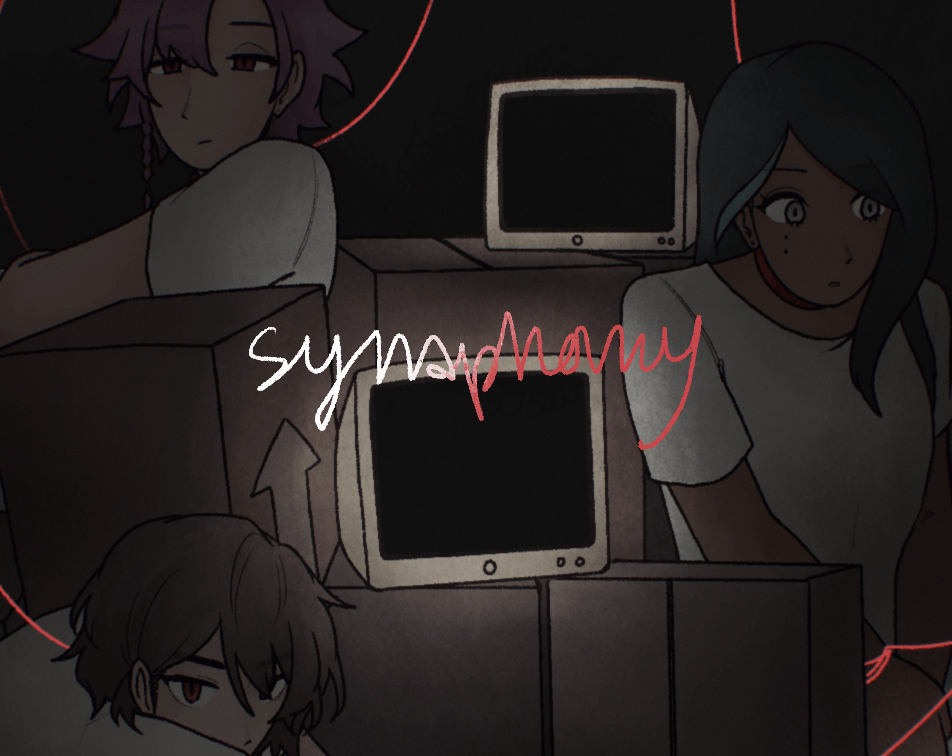

status: i wish i could become a cute little creature...
IMPORTANT NOTE!!!!
i know this blog is kinda focused on one particular game only... i promise i play other games okay! this one is just important to me because
i don't see anyone else talking about it...
its just my current hyperfixation okay !!! uuu... not even my boyfriend can hear about it and it sucks keeping it a secret from him... aaaaaaaa
he can never know about this blog!!

synaphony is a pretty new game but i've been really into playing it... i haven't seen anyone make much of an ending guide yet...!
so i thought i could help out Xp (cause i'm a liiiitle addicted to trying to find all of it's secrets haha!)
theres still quite a few bugs in the game though... i wonder if the dev team will address them soon ;;; i hope they will!!
for now i guess its up to me to spread the word!!! uhm... im really bad at it though... even though its even half of my job.... aw man....
ill try not to be super biased >< (i dont want you to know who my favorite character is, that would be so embarrassing!) but these guides aren't
actually written by me! i found them while data mining... im just here to share it with you all!